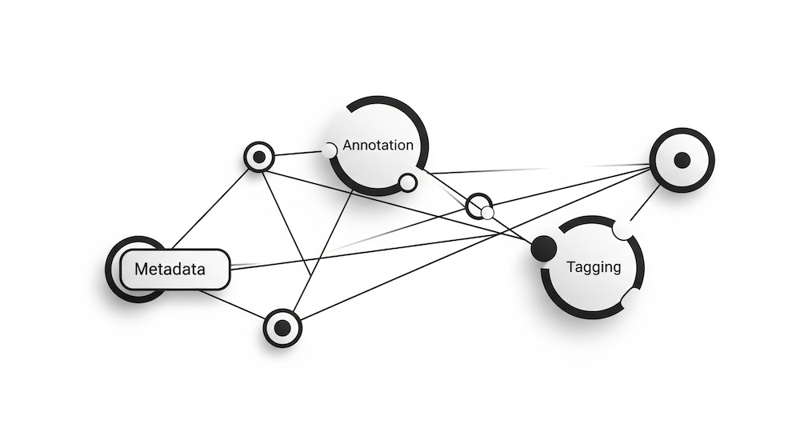

All Posts
All Posts

Annotation and Tagging are a pair of features for attaching metadata to objects in a Malloy model. The idea of attaching metadata to fragments of a program is a common one in modern programing languages. When designing this feature for Malloy, we were not certain what uses there might be for metadata, because a Malloy model is a slightly different kind of programming and might have slightly different requirments for its metadata.
Because of this, the main feature of the Malloy design for annotation is that it imposes almost no structure on what kinds of data might be contained in the annotations. Annotations in Malloy are surface which is flexible and powerful, to allow users of Malloy to investigate the possibilities of annotation that we were unable to envision when we designed Malloy.
Malloy uses annotation sparingly, but we are noticing more projects using Malloy and taking advantage of annotations, and now seemed like a good time to go into a little more detail on the feature so that it would be clear how to take advantage of all the power offered by annotations.
Annotations
Annotations can be attached to models, sources, queries, views, and and field calculations. (e.g. dimensions, measures, caclucations, etc.)
An annotation is some text starting with the # character and continuing to the end of the line.
Annotation lines beginning with ## are applied to the model. Annotations beginning with a single # are applied to the next object being defined.
## (def model-level-notice "This is a model level annotation") # "queryProperties": { "notice": "This annotation is attach to the query 'first_row'" } query: first_row is some_src -> {select: *; limit 1}
You will notice in these examples that each annotation is written in a different language, this is just an example of what is possible. An application can choose to parse its own annotations any way it chooses, or even to not parse them at all and simply use them as free form text. There is a Malloy companion property language (Malloy Tag Language) designed to be used with annotations, but applications are free to interpret their annotations in any way which make sense to them.
Annotation Prefixes
Multiple applications can decorate a Malloy model with annotations, and there is a convention which will allow applications to add annotations even without being aware of each other. This is the "annotation prefix".
When an application requests annotations for an object, a regular expression is passed along with the request, and only annotations matching that regular expression are returned. Here are some example annotation usages with their annotation prefixes:
prefix:
/^# /Instructions to the Malloy rendering library
Example:
# chart { type=bar variant=stacked }Parsed by the renderer using the Malloy Tag Language (See the Render Tag Documentaion)
prefix:
/^##!/Flags to control the Malloy to SQL translator
Example:
##! experimental { featureName1 }Parsed by the Malloy translator, alsing using the Malloy Tag Language (See Experimental Features)
prefix:
/^#"/Doc strings for describing objects
Example:
#" This source requires a date filter expression (fex)Parsed by: Nothing yet, this is aspirational. Our intention is this would be where developer documentation for reusable components in Malloy models would be written, allowing an IDE to use the annotations to offer information to developers.
prefix:
/#(yourApp)/Annotations for the app
yourAppExample:
#(docs) size=mediumWe use the
(docs)prefix internally to attach formatting instructions for the Malloy documentation package.
Indirect Annotations
In addition to annotations directly placed on an object, there are two other ways for an object to have annotation metadata.
If one object is an extension, or refinement of an existing object, it will have all the annotations of the object it is based on, as well as it's own annotations. For example
// this will render as a bar chart # bar_chart view: by_color is { group_by: color; aggregate: thing_count is count() } // will "inherit" the bar_char annotation from by_color view: by_color_and_size is by_color + { group_by: size } // will show the by_color bar chart, only for the most common colors nest: top_colors is by_color + { limit: 5 }
The other indirect way annotations can be placed on an object is available to objects which can be defined with a single statement
// Every measure defined in this measure statement will have the "private" annotation, in addition // to any annotations on the actual object. # private measure: # currency=US_DOLLARS total_revenue is sum(revenue) # font_color=green profitable is pick 'Yes' when sum(revenue) > sum(cost) else 'No'
The Malloy Tag Language
In some of the examples above we showed annotations intended be be parsed by an S-Expression parser and a JSON Parser, but Malloy also has its own language for writing simple property-value data structures, the Malloy Tag Language.
More details on the tag language are in the documentation, but here is a quick overview to give a flavor of the language.
Tag Values
A tag has a value which can be a string or an array of values
A string can be quoted, but if it is a simple series of alphanumeric chartacters it can also be unquoted
An array is written using
[ ]to bracket the contents (e.g.[mark mack molly mandy])There is no boolean value, while you can use the strings
trueandfalseas values, the intention is that true/false conditions are indicated by presence/absence of a tag
go_color=green stop_color="red" slow_colors=[yellow orange "yellowish orange"] // a boolean .. slowdown // turning off a boolean -slowdown
Tag Properties
This is unlike other property languages. A tag, in addition to values, can also have properties.
Properties on a tag can be set using the familiar
.(dot) gesture{}can be used to specify a number of properties at once
slow_colors=[yellow orange "yellowish orange"] slow_colors.flashing slow_colors { blinks_per_minute=10 safetymode }
Sample Code For Annotation Usage
For some example metadata markup which looks like this ...
// some documentation #(myDoc) This is a lot of documentation #(myDoc) across many lines // and some properties #(myTags) force default=go source: foo is ...
Here is some code which might be written to access the metadata on an object from the Malloy API which has annotations.
function myTagsAndDocs(t: Taggable): { tags: Tag, docs: string[] } { const tagParse = t.tagParse({prefix: /^#\(myTags\)/}); if (tagParse.log) { // deal with syntax errors, or ignore them throw new Error('syntax errors in tag parse'); } return { tags: tagParse.tag, docs: t.getTaglines(/^#\(myDocs\)/), }; } // ... const metadata = myTagsAndDocs(someObj) if (metadata.tags.has('force')) do_force_action(); if (metadata.tags.has('default')) set_default(metadata.tags.text('default')); setDocs(metadata.docs);
The Future of Annotation
We are waiting to see how annotations are used. We have many ideas for the future, but we have decided on "wait and learn" approach for this feature. Things we have talked about are ...
Some syntax for annotation metadata which is longer than one line
More formality on "annotation prefixes", perhaps requiring prefixes to match a pattern, or maybe some sort of "prefix registry" to make certain applications do not inadvertantly affect metadata from other applications.
More formality on which annotations are tags, and what the "schema" is for a tagged annotation, allowing the IDE to assist in tagging complex objects.